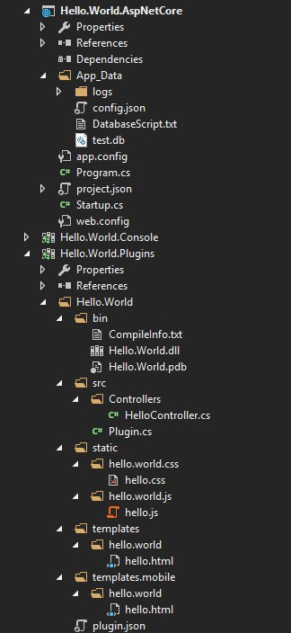

网站结构
ZKWeb网站分为程序文件，数据文件和插件文件。
网站结构的图示

网站结构的详解
- Hello.World.AspNetCore 启动网站的项目
- App_Data 数据文件，这里面文件不会在更新时覆盖
- logs 日志文件夹
- config.json 网站的配置文件
- DatabaseScript.txt 用于检测数据库是否需要更新的文件
- test.db 数据库文件，使用SQLite时才有
- bin 程序文件，用于运行网站
- web.config IIS中使用的网站配置文件
- App_Data 数据文件，这里面文件不会在更新时覆盖
- Hello.World.Plugins 插件项目
- Hello.World 一个插件文件夹
- bin 由插件编译出来的程序集
- src 插件的源代码
- Controllers 储存控制器的文件夹
- HelloController.cs 示例控制器
- Plugin.cs 载入插件时的处理，可以省略
- Controllers 储存控制器的文件夹
- static 静态文件
- templates 模板文件
- templates.mobile 手机专用的模板文件
- plugin.json 插件信息
- Hello.World 一个插件文件夹
一个网站有多个插件，插件可以储存在不同的目录中。
config.json中定义了插件储存的目录列表和插件列表。

对于插件中的模板文件和静态文件等资源文件，ZKWeb采取了和Django类似的重叠+透过式文件系统。
详细的解释请参考插件系统。